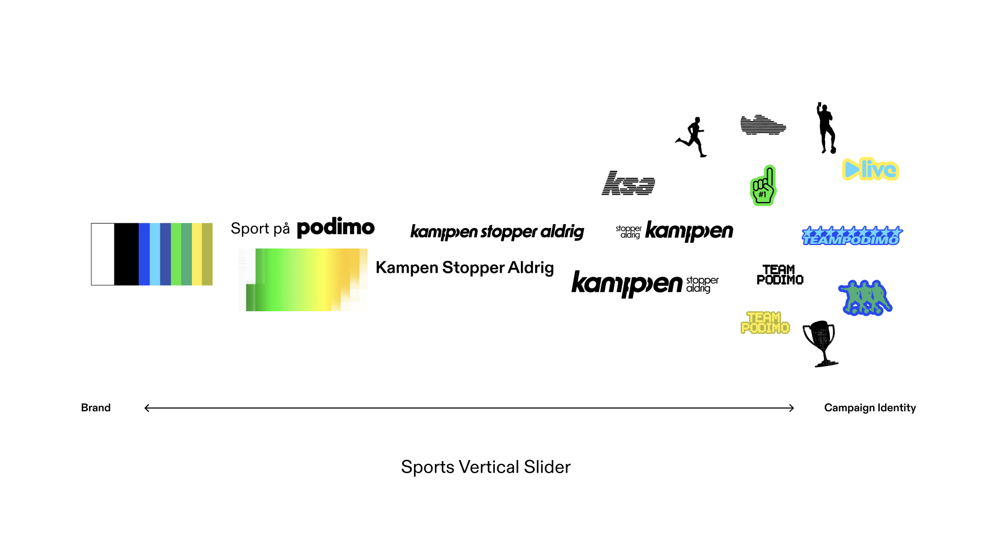

A tentpole campaign model that brings the biggest creators in a market together under one brand-defining moment, then turns that moment into a scalable stream of content, formats, and touchpoints.
Podimo's campaign portfolio model, defined as part of the Brand & Creative mandate, treats shows like brands and sorts every campaign into one of four roles: tentpoles that build super-brands and shape market position, acquirers that convert through show-first activations, engagers that retain through locally-led tactics, and key moments that put content into seasonal and cultural conversations.
Sports on Podimo is a tentpole: the biggest bet in the system, uniting the sports slate under one super-brand and giving the vertical a market position of its own. The model itself was earned, not invented: it grew out of Show 360, the launch framework proven on Undergrunden in 2025.
As Podimo grew into a full media and entertainment company, its marketing had to behave like one. The thesis behind the sports vertical: how you activate content should be as entertaining as the content itself, and the benchmark isn't other audio platforms, it's the best brands in culture.
The model brings a market's biggest creators and stars under one defining moment, social-first by nature, with entertainment at its core, then generates a stream of bespoke content and formats out the back of a single production.
The first iteration launched in Denmark in April 2026. When the World Cup arrived and Nike's viral tournament film dropped, it was built on the same playbook: an ensemble of stars united under one cultural moment, feeding a stream of social-first content. Podimo's version had been running for months.
Working first-hand with some of the biggest names in Scandinavia proved the second half of the thesis: creators don't just agree to participate in brand-defining moments, they're excited to. That enthusiasm compounds, because every creator brings their audience with them.

The campaign runs on a repeatable tentpole architecture: the best creators from the slate, united under one moment, in a format that activates across every touchpoint, held together by cohesive messaging, a shared design system, and the budget to back it. Built in Denmark, adapted for the Netherlands within weeks, and designed to scale across any market or vertical.
The campaign was built for men and it over-indexed with them. Men were 54% of reach but 64% of subscriptions, they converted slightly cheaper than women, and their positive attitude nearly tripled, 12.5% to 23.9%, against a 5.9 point lift among women.
"Nicolai has a rare ability to zoom in and out on any project, guiding both strategy and execution to the best outcome, and he gives people the room to do their best work without micromanaging. Within a year and a half we turned creative production into a well-functioning machine across multiple markets. Calm, insightful, a genuinely great leader."